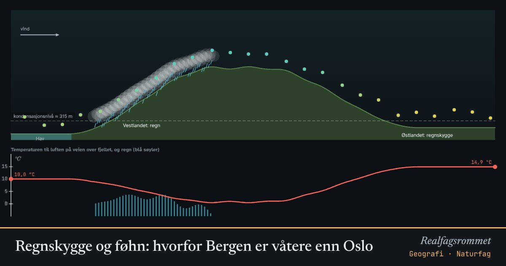

Regnskygge og føhn: hvorfor Bergen er våtere enn Oslo
Fuktig luft fra havet presses opp over fjellet og kjøles ned. Når den er kald nok, kondenserer vanndampen til skyer og regn. På den andre siden synker luften, blir varm og tørr.
Start animasjonen
Formler
Om animasjonen
Luft som stiger, utvider seg og blir kaldere. Tørr luft kjøles omtrent 1 °C per 100 meter. Når temperaturen når duggpunktet, kondenserer vanndampen, og vi får skyer.
Når vanndamp kondenserer, frigjøres varme. Derfor kjøles mettet luft bare omtrent 0,5 °C per 100 meter. Vannet faller ut som regn eller snø på lo-siden (vindsiden) av fjellet.
På le-siden synker luften og varmes opp 1 °C per 100 meter, fordi den har mistet vannet. Den kommer ned varmere og tørrere enn den startet. Det kalles føhn, og tørt område bak fjellet kalles regnskygge.
Dette er en viktig grunn til at Bergen får rundt tre ganger så mye nedbør som Oslo.
Prøv dette
- Hvor høyt over havet begynner skydannelsen med standardverdiene? Sjekk med formelen.
- Hva skjer med regnmengden når fjellet blir høyere? Og når luften er tørrere?
- Hvor mye varmere er luften når den kommer ned i dalen på østsiden, enn da den startet ved kysten?
- Hvorfor kan det være varmt og tørt vær i Sunndalsøra om vinteren?
Kompetansemål
- Geografi: Vær, klima og nedbør
Mer om klima, miljø og bærekraft
- Drivhuseffekten og jordas strålingsbalanse
- Karbonkretsløpet og CO₂ i atmosfæren
- Havforsuring: CO₂ gjør havet surere
- Klimaendringer og artenes utbredelse
- Miljøgifter hoper seg opp i næringskjeden
- Rovdyr og byttedyr
- Energistrøm og næringskjeder
- Grønn kjemi: atomøkonomi
- Årstider, dagslengde og solinnstråling
- Flom: regn, jord og asfalt